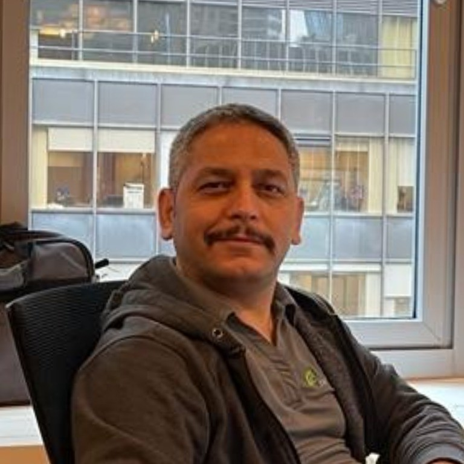

Osman spent 13 years as a logistics and staff officer in the Turkish Armed Forces and NATO — including a tour supporting a Provincial Construction Team in Afghanistan — before retraining as a Site Reliability Engineer. He's spent the years since keeping production systems online at companies like Bluevine, PacerPro, and Early Warning, AWS- and Kubernetes-certified, the person teams call at 3am when something's on fire.
He built Digital Safety Knights the same way he'd secure any critical system: assume the threat is real, plan for it anyway, and make sure the safety net is actually free for the families who need it — not a trial, not a paywall, just there.

Ayşebaşak is the reason the Knights look and feel the way they do. She's the one who pushes back until a character actually feels right instead of just looking finished — down to specific notes like "make Shieldy simpler, more of a real knight, less like something a computer obviously made."
Because she's still a kid herself, her real photo and last name stay off this page — that boundary isn't an afterthought, it's the whole point of the organization she's helping build. Dame Noble stands in for her here on purpose.
We started this because we kept asking each other the same question every parent eventually asks: is my kid actually safe out there? Every answer we could find online was either a scary headline or a settings menu nobody had time to read properly.
So we built the thing we actually wanted to exist — free, honest about real threats without being frightening, and made by two people who care about exactly one outcome: kids get to enjoy the internet, and get to do it safely. That's it. That's the whole passion.